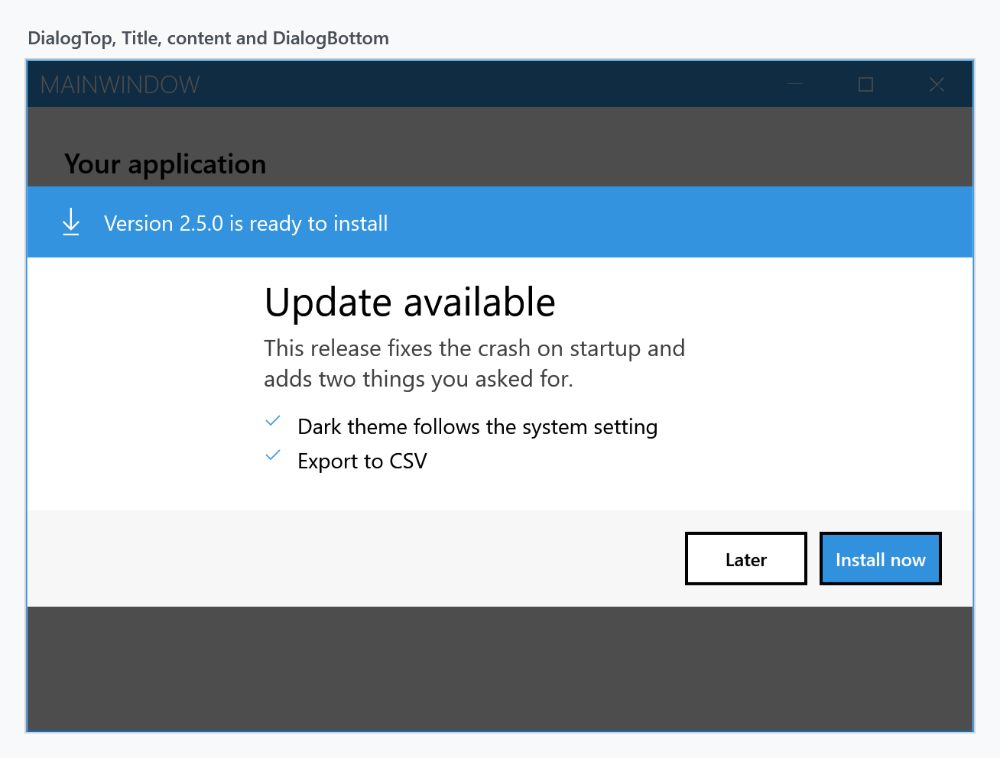
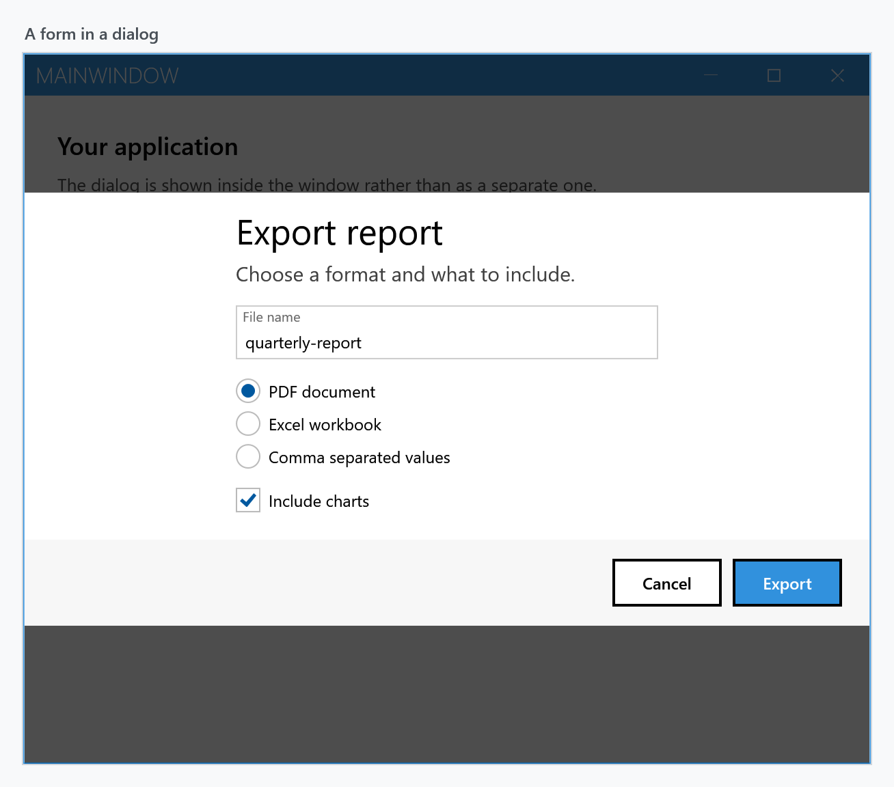
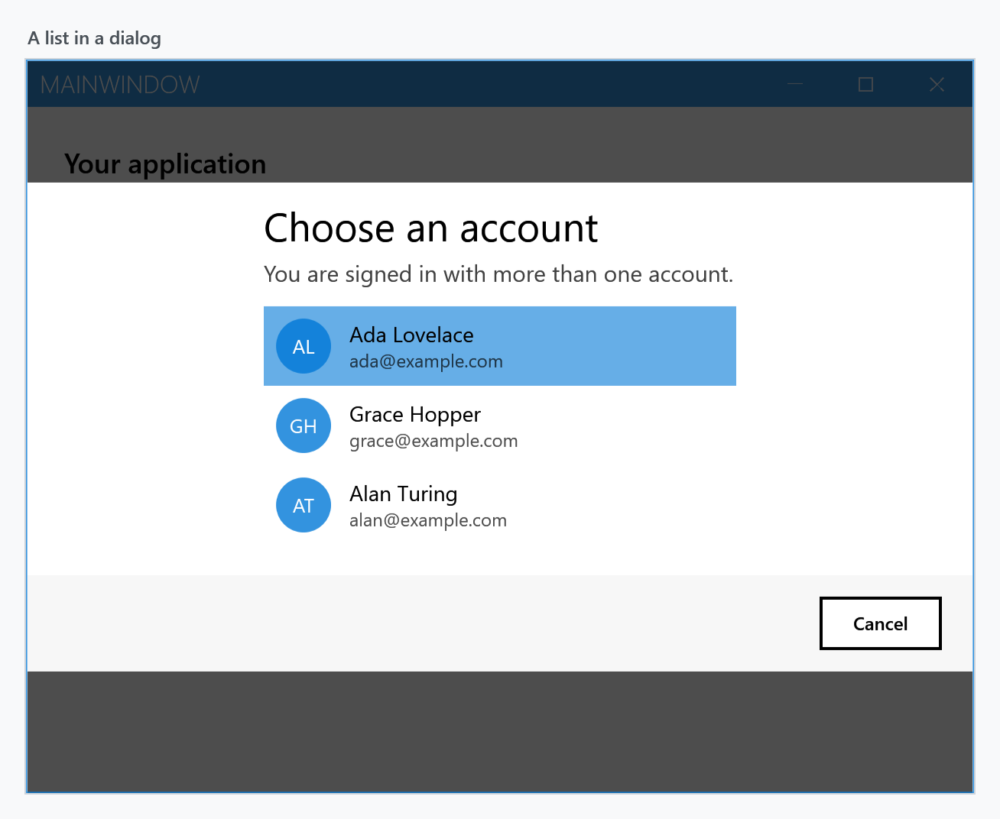
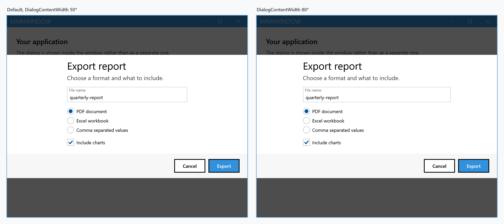

When none of the built-in dialogs fits, CustomDialog gives you the same overlay with whatever content you put in it. It is a ContentControl, so anything that goes in a UserControl goes in a dialog.

Anatomy
A dialog has four regions, and knowing which is which is most of the job:
| Region | |
|---|---|
DialogTop |
full width, above everything. Good for a coloured band or a banner |
Title |
a TextBlock above the content, in the dialog title font. Hidden when null |
Content |
your content |
DialogBottom |
full width, below everything. Where a button bar goes |
Title and Content sit in the middle column of a three-column grid — DialogContentMargin, DialogContentWidth, DialogContentMargin, which default to 25*, 50* and 25*. So they occupy the middle half of the window and stay centred as it is resized. DialogTop and DialogBottom are outside that grid and always span the full width, which is what makes the coloured band above and the button bar below reach the edges.
The dialog in the figure is this, and nothing else:
<mah:CustomDialog x:Class="MyApp.UpdateDialog"
xmlns="http://schemas.microsoft.com/winfx/2006/xaml/presentation"
xmlns:x="http://schemas.microsoft.com/winfx/2006/xaml"
xmlns:mah="http://metro.mahapps.com/winfx/xaml/controls"
Title="Update available">
<mah:CustomDialog.DialogTop>
<Border Padding="20 14" Background="{DynamicResource MahApps.Brushes.Accent}">
<StackPanel Orientation="Horizontal">
<TextBlock VerticalAlignment="Center"
FontFamily="Segoe MDL2 Assets"
FontSize="18"
Foreground="{DynamicResource MahApps.Brushes.IdealForeground}"
Text="" />
<TextBlock Margin="12 0 0 0"
VerticalAlignment="Center"
FontSize="14"
Foreground="{DynamicResource MahApps.Brushes.IdealForeground}"
Text="Version 2.5.0 is ready to install" />
</StackPanel>
</Border>
</mah:CustomDialog.DialogTop>
<StackPanel Margin="0 4 0 20">
<TextBlock Margin="0 0 0 12"
FontSize="15"
Opacity="0.75"
Text="This release fixes the crash on startup and adds two things you asked for."
TextWrapping="Wrap" />
<!-- one row per change -->
</StackPanel>
<mah:CustomDialog.DialogBottom>
<Border Padding="20 14" Background="{DynamicResource MahApps.Brushes.Gray10}">
<StackPanel HorizontalAlignment="Right" Orientation="Horizontal">
<Button Content="Later" Style="{DynamicResource MahApps.Styles.Button.Dialogs}" />
<Button Margin="8 0 0 0"
Content="Install now"
Style="{DynamicResource MahApps.Styles.Button.Dialogs.Accent}" />
</StackPanel>
</Border>
</mah:CustomDialog.DialogBottom>
</mah:CustomDialog>
Use the theme brushes rather than fixed colours — MahApps.Brushes.Accent with MahApps.Brushes.IdealForeground on top of it, MahApps.Brushes.Gray10 for the quiet strip — and the dialog follows the application's theme without further work.
Button styles
Three styles make your buttons look like the ones in the built-in dialogs. They are the same styles those dialogs use.
| Style | |
|---|---|
MahApps.Styles.Button.Dialogs |
the plain one |
MahApps.Styles.Button.Dialogs.Accent |
filled with the accent colour, for the affirmative action |
MahApps.Styles.Button.Dialogs.AccentHighlight |
the highlight variant |
Showing and hiding
ShowMetroDialogAsync puts the dialog on screen. It returns as soon as it is up — not when the user has answered — so closing it is your job:
var dialog = new UpdateDialog();
await this.ShowMetroDialogAsync(dialog);
await this.HideMetroDialogAsync(dialog);
From inside the dialog, RequestCloseAsync does the same without needing the window:
private async void OnLaterClick(object sender, RoutedEventArgs e)
{
await this.RequestCloseAsync();
}
RequestCloseAsync works both for a dialog shown inside a MetroWindow and for one shown in its own window, despite what its XML doc says about throwing for the first case — it routes to HideMetroDialogAsync for you.
There is also an overload that constructs the dialog for you:
await this.ShowMetroDialogAsync<UpdateDialog>();
It uses Activator.CreateInstance(typeof(TDialog), window, settings), so the type needs a (MetroWindow, MetroDialogSettings) constructor. A dialog defined in XAML has only the generated parameterless one unless you add it, and without it this overload throws MissingMethodException.
GetCurrentDialogAsync<T>() hands back the topmost dialog of that type, or null:
var dialog = await this.GetCurrentDialogAsync<UpdateDialog>();
Getting an answer back
Since the show call does not wait, a custom dialog needs its own way to report what the user chose. A TaskCompletionSource set by the buttons turns it back into something awaitable:
public partial class ExportDialog : CustomDialog
{
private readonly TaskCompletionSource<ExportOptions> result = new();
public ExportDialog()
{
this.InitializeComponent();
}
public Task<ExportOptions> WaitForResultAsync() => this.result.Task;
private async void OnExportClick(object sender, RoutedEventArgs e)
{
this.result.TrySetResult(new ExportOptions(this.FileName.Text, this.IncludeCharts.IsChecked == true));
await this.RequestCloseAsync();
}
private async void OnCancelClick(object sender, RoutedEventArgs e)
{
this.result.TrySetResult(null);
await this.RequestCloseAsync();
}
}
which reads like any other dialog at the call site:
var dialog = new ExportDialog();
await this.ShowMetroDialogAsync(dialog);
var options = await dialog.WaitForResultAsync();
if (options is not null)
{
await ExportAsync(options);
}
TrySetResult rather than SetResult, so a second click cannot throw. Where there is nothing to report back, WaitUntilUnloadedAsync() is enough on its own:
await this.ShowMetroDialogAsync(dialog);
await dialog.WaitUntilUnloadedAsync();
A form
Ordinary controls need no special treatment. The MahApps styles apply to them inside a dialog as everywhere else, so a TextBox keeps its floating watermark and the radio buttons and checkbox keep the accent colour:

<StackPanel Margin="0 4 0 20">
<TextBlock Margin="0 0 0 14" FontSize="15" Opacity="0.75" Text="Choose a format and what to include." />
<TextBox x:Name="FileName"
Margin="0 0 0 14"
mah:TextBoxHelper.UseFloatingWatermark="True"
mah:TextBoxHelper.Watermark="File name"
Text="quarterly-report" />
<RadioButton Margin="0 0 0 6" Content="PDF document" IsChecked="True" />
<RadioButton Margin="0 0 0 6" Content="Excel workbook" />
<RadioButton Margin="0 0 0 14" Content="Comma separated values" />
<CheckBox x:Name="IncludeCharts" Content="Include charts" IsChecked="True" />
</StackPanel>
A list
Nor is there anything stopping an ItemsControl — this is a ListBox with BorderThickness="0" so it does not draw a frame inside the dialog:

In a real application the items come from a binding and each one gets a DataTemplate; the picture above spells them out to keep the sample short.
Making the content wider
DialogContentWidth and DialogContentMargin are GridLengths, so they take star values. Widening the content to 80* narrows the two margins to what is left:

<mah:CustomDialog Title="Export report" DialogContentWidth="80*" />
Absolute values work too — DialogContentWidth="400" with DialogContentMargin="*" gives a fixed-width block centred in the window.
From a view model
IDialogCoordinator carries the same three methods, with the context object in front. See MVVM dialogs for how the context is wired up.
await this.dialogCoordinator.ShowMetroDialogAsync(this, dialog);
await this.dialogCoordinator.HideMetroDialogAsync(this, dialog);
In a window of its own
Where there is no MetroWindow to draw into, a custom dialog can open in one:
new UpdateDialog().ShowDialogExternally(); // returns immediately
new UpdateDialog().ShowModalDialogExternally(); // blocks until it is closed
Both take an optional owner window and an Action<Window> that lets you set the size, title or position of the window that is created for it.
Settings
A custom dialog takes a MetroDialogSettings like the built-in ones, and reads the parts that are not about buttons: ColorScheme, the three font sizes, AnimateShow and AnimateHide, OwnerCanCloseWithDialog and CustomResourceDictionary. The button labels and CancellationToken do nothing here — the buttons are yours, and so is closing the dialog. See Dialog Settings.